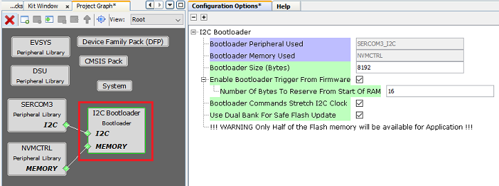
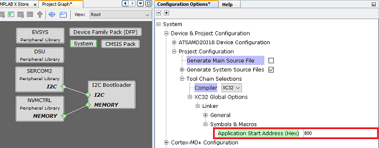

Bootloader Specific User Configurations

- Bootloader Peripheral Used:
- Specifies the I2C peripheral instance used by the bootloader
- The name of the peripheral will vary from device to device
- Bootloader Memory Used:
- Specifies the memory peripheral used by bootloader to perform flash operations
- The name of the peripheral may vary from device to device
- Bootloader Size (Bytes):
- Specifies the maximum flash memory size required by the bootloader
- This size will vary from device to device and will always be aligned to device erase unit size
- Bootloader Commands Stretch I2C Clock:
- This Option is used to decide if bootloader stretches clock when it is busy or sends NAK. Enabling this option stretches the I2C clock when the bootloader is busy with the internal flash erase or write operation. The clock is stretched during the acknowledgement phase. This frees the I2C host from repeatedly polling the status of the sent command. If this option is disabled, the bootloader responds with a NAK while it is busy with the internal flash erase or write operation. This allows the I2C host to communicate with other slaves on the same bus, while the bootloader is busy.
- Enable Bootloader Trigger From Firmware:
- This Option can be used to Force Trigger bootloader from application firmware after a soft reset. It does so by reserving the specified number of bytes in SRAM from the start of the RAM. The reserved memory is updated by the application with a pre-defined pattern. The bootloader firmware in the bootlaoder_Trigger() routine, can check the reserved memory for the pre-defined pattern and enter bootloader mode if the pattern matches.
- Number Of Bytes To Reserve From Start Of RAM:
- This option adds the provided offset to RAM Start address in bootloader linker script.
- Application firmware can store some pattern in the reserved bytes region from RAM start for bootloader to check at reset in bootloader_Trigger() function
Bootloader System Configuration

- Application Start Address (Hex):
- Start address of the application which will programmed by bootloader. The application must be configured to start from the address specified here.
- The start address must be aligned to the erase unit size on that device
- By default this value is set equal to the bootloader size (aligned to erase unit). It can be modified as per user need.
- This value will be used by bootloader to Jump to application at device reset